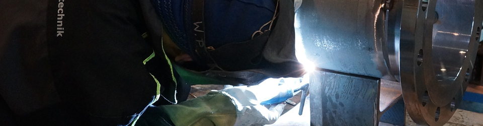

입사지원가이드
열정과 도전정신을 지닌 인재
생산직
- 모집시기
- 인력 소요 발생시 모집합니다.
- 지원방법
- 채용공고를 통해 모집합니다.
※ 입사지원서를 작성하시려면‘지원번호’가 필요합니다. (‘지원번호’는 기초심사 합격자에 한해 발급됩니다.)
전형절차- 1단계
기초심사 - 2단계
기초전형 - 3단계
지원서 작성 - 4단계
서류전형 - 5단계
삼성 직무적성검사 - 6단계
면접전형 - 7단계
건강검진 - 8단계
최종합격
사무직
- 지원자격
- 학력/연령/성별에 제한없이 지원이 가능합니다.
(3급은 공인기관의 어학 성적 보유必) - 해외여행에 결격사유가 없고,
병역기피 사실이 없어야 합니다.
- 지원방법
- 채용공고를 통해 모집합니다.
- 1단계
지원서 작성 - 2단계
직무적합성평가 - 3단계
삼성직무적성검사 - 4단계
면접전형 - 5단계
건강검진 - 6단계
최종합격
경력사원
- 모집시기
- 채용 공고 및 시기와 관계없이 입사지원서를 작성·등록하시면, 인력 소요 발생시 개별 연락드립니다.
- 지원자격
- 학력/연령/성별에 제한없이 지원이 가능합니다. (3급은 공인기관의 어학 성적 보유必)
- 해외여행에 결격사유가 없고, 병역기피 사실이 없어야 합니다.
- 지원방법
- 아래의 ‘온라인지원서’와 ‘당사 지원서 양식(입사지원서, 자기소개서)’을 모두 작성하여 제출해 주세요.
- ※ 희망근무지 및 세부경력(근무기간, 직위, 업무, 업적 등)은 상세 기재바랍니다.
- 1단계
지원서 작성 - 2단계
서류전형 - 3단계
면접전형 - 4단계
건강검진 - 5단계
최종합격